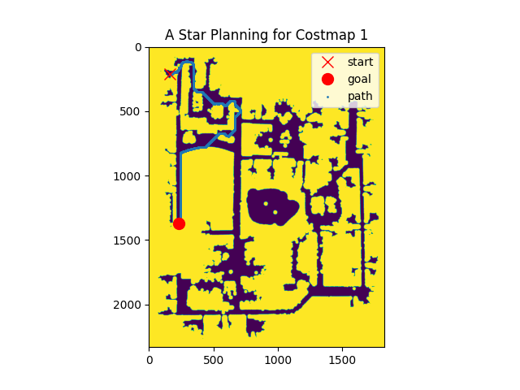
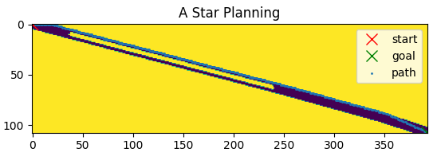
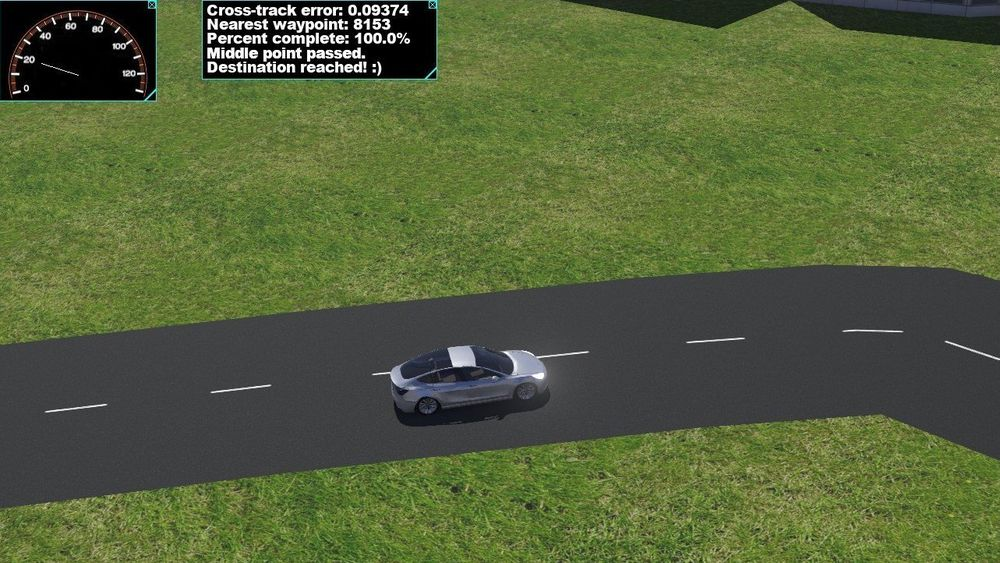
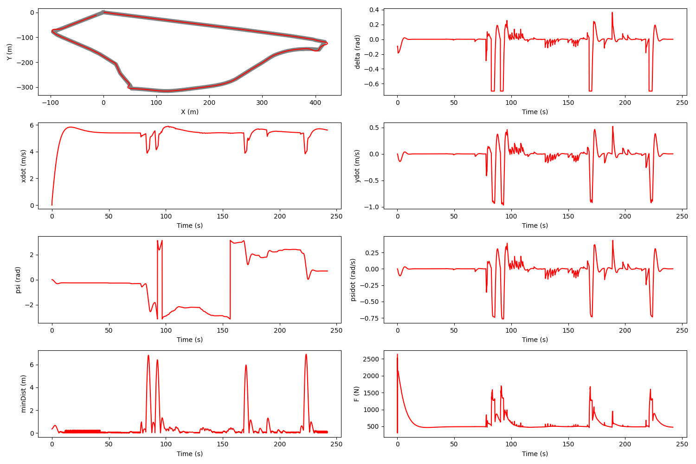

Planning & Control
Autonomous Vehicle Planning and Control
Autonomous vehicles must plan a collision-free path and then follow it precisely, both on open road and around slower traffic. This project’s objective was to drive a simulated car around a full track loop with low cross-track error, and then to overtake a slower lead vehicle on the way to a goal. For path following, I designed a discrete-time LQR steering controller with integral action on cross-track error, anti-windup, and steering-rate smoothing, paired with a PID speed controller. For planning, I implemented A* search over occupancy costmaps, first on a campus map (Figure 1) and then on the road map for the overtake (Figure 2), and fed the planned path to the LQR tracker. On the full loop, the car completed the course while staying 0.50 m from the reference path on average (Figure 3, Table 1). The state history shows how: steering stayed nearly constant on the straights, and the larger deviations were confined to brief spikes at the sharpest turns (Figure 4). With the A* path, the car also passed the lead vehicle and reached the goal (Table 1). Integral action and smoothing thus let a linear controller hold the line on a nonlinear vehicle, while the spikes at the turns show where the tracker has the most room to improve.




| Measure | Result |
|---|---|
| Mean cross-track error, full loop | 0.50 m |
| Track completed | 100% |
| Overtake | Passed the slower lead vehicle and reached the goal |